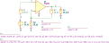

"cfbVampExtended"
.source V1
.detector V_3
.lgRef H_O1
.model mycfb OC cp={C_i} gp={1/R_i} cpn={C_d} gpn={1/R_d} gm={g_m} zt={R_t/(1+s*tau)} zo={R_o/(1+s*tau)}
.param C_i=5p R_i=1M g_m=20m R_t=1M R_o=2k tau=50u R_a=2k R_b=500 R_s=100 R_ell=500 V_s=1 C_d=2p R_d=10k
O1 2 4 3 0 mycfb
R1 2 1 R value={R_s} noisetemp=0 noiseflow=0 dcvar=0 dcvarlot=0
R2 4 0 R value={R_b} noisetemp=0 noiseflow=0 dcvar=0 dcvarlot=0
R3 3 4 R value={R_a} noisetemp=0 noiseflow=0 dcvar=0 dcvarlot=0
R4 3 0 R value={R_ell} noisetemp=0 noiseflow=0 dcvar=0 dcvarlot=0
V1 1 0 V value={V_s} noise=0 dc=0 dcvar=0
.end
| RefDes | Nodes | Refs | Model | Param | Symbolic | Numeric |
|---|---|---|---|---|---|---|
| Cp_O1 | 2 0 | C | value | $C_{i}$ | $5.0 \cdot 10^{-12}$ | |
| vinit | $0$ | $0$ | ||||
| Cpn_O1 | 2 4 | C | value | $C_{d}$ | $2.0 \cdot 10^{-12}$ | |
| vinit | $0$ | $0$ | ||||
| Gm_O1 | 1_O1 4 2 4 | g | value | $g_{m}$ | $0.02$ | |
| Gp_O1 | 2 0 2 0 | g | value | $\frac{1}{R_{i}}$ | $1.0 \cdot 10^{-6}$ | |
| Gpn_O1 | 2 4 2 2 | g | value | $\frac{1}{R_{d}}$ | $0.0001$ | |
| H_O1 | 3 0 0 1_O1 | HZ | value | $\frac{R_{t}}{s \tau + 1}$ | $\frac{1.0 \cdot 10^{6}}{5.0 \cdot 10^{-5} s + 1.0}$ | |
| zo | $\frac{R_{o}}{s \tau + 1}$ | $\frac{2000.0}{5.0 \cdot 10^{-5} s + 1.0}$ | ||||
| R1 | 2 1 | R | value | $R_{s}$ | $100.0$ | |
| noisetemp | $0$ | $0$ | ||||
| noiseflow | $0$ | $0$ | ||||
| dcvar | $0$ | $0$ | ||||
| dcvarlot | $0$ | $0$ | ||||
| R2 | 4 0 | R | value | $R_{b}$ | $500.0$ | |
| noisetemp | $0$ | $0$ | ||||
| noiseflow | $0$ | $0$ | ||||
| dcvar | $0$ | $0$ | ||||
| dcvarlot | $0$ | $0$ | ||||
| R3 | 3 4 | R | value | $R_{a}$ | $2000.0$ | |
| noisetemp | $0$ | $0$ | ||||
| noiseflow | $0$ | $0$ | ||||
| dcvar | $0$ | $0$ | ||||
| dcvarlot | $0$ | $0$ | ||||
| R4 | 3 0 | R | value | $R_{\ell}$ | $500.0$ | |
| noisetemp | $0$ | $0$ | ||||
| noiseflow | $0$ | $0$ | ||||
| dcvar | $0$ | $0$ | ||||
| dcvarlot | $0$ | $0$ | ||||
| V1 | 1 0 | V | value | $V_{s}$ | $1.0$ | |
| noise | $0$ | $0$ | ||||
| dc | $0$ | $0$ | ||||
| dcvar | $0$ | $0$ |
| Name | Symbolic | Numeric |
|---|---|---|
| $C_{d}$ | $2.0 \cdot 10^{-12}$ | $2.0 \cdot 10^{-12}$ |
| $C_{i}$ | $5.0 \cdot 10^{-12}$ | $5.0 \cdot 10^{-12}$ |
| $R_{a}$ | $2000$ | $2000.0$ |
| $R_{b}$ | $500$ | $500.0$ |
| $R_{d}$ | $1.0 \cdot 10^{4}$ | $1.0 \cdot 10^{4}$ |
| $R_{\ell}$ | $500$ | $500.0$ |
| $R_{i}$ | $1.0 \cdot 10^{6}$ | $1.0 \cdot 10^{6}$ |
| $R_{o}$ | $2000$ | $2000.0$ |
| $R_{s}$ | $100$ | $100.0$ |
| $R_{t}$ | $1.0 \cdot 10^{6}$ | $1.0 \cdot 10^{6}$ |
| $V_{s}$ | $1$ | $1.0$ |
| $g_{m}$ | $0.02$ | $0.02$ |
| $\tau$ | $5.0 \cdot 10^{-5}$ | $5.0 \cdot 10^{-5}$ |
Go to cfbVampExtended_index
SLiCAP: Symbolic Linear Circuit Analysis Program, Version 2.0.1 © 2009-2024 SLiCAP development team
For documentation, examples, support, updates and courses please visit: analog-electronics.tudelft.nl
Last project update: 2024-10-20 16:58:39